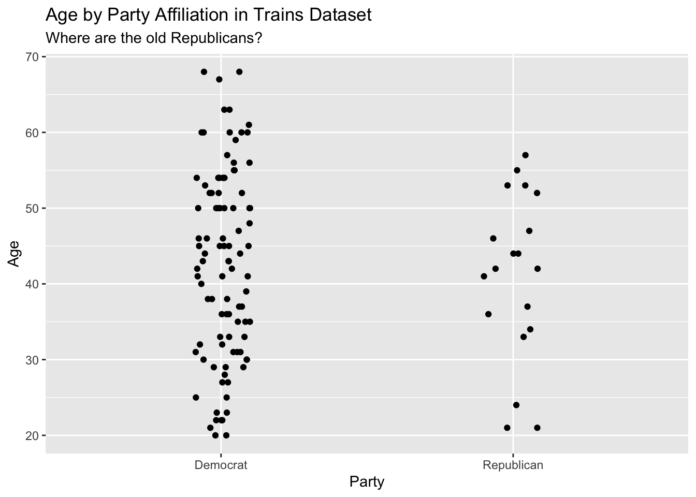
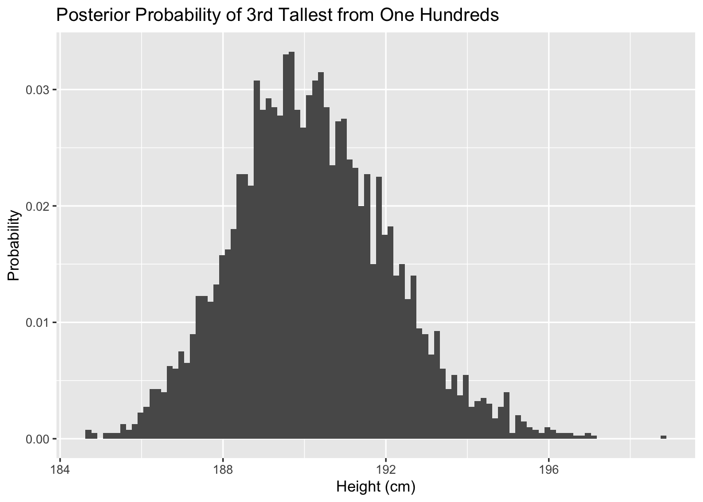
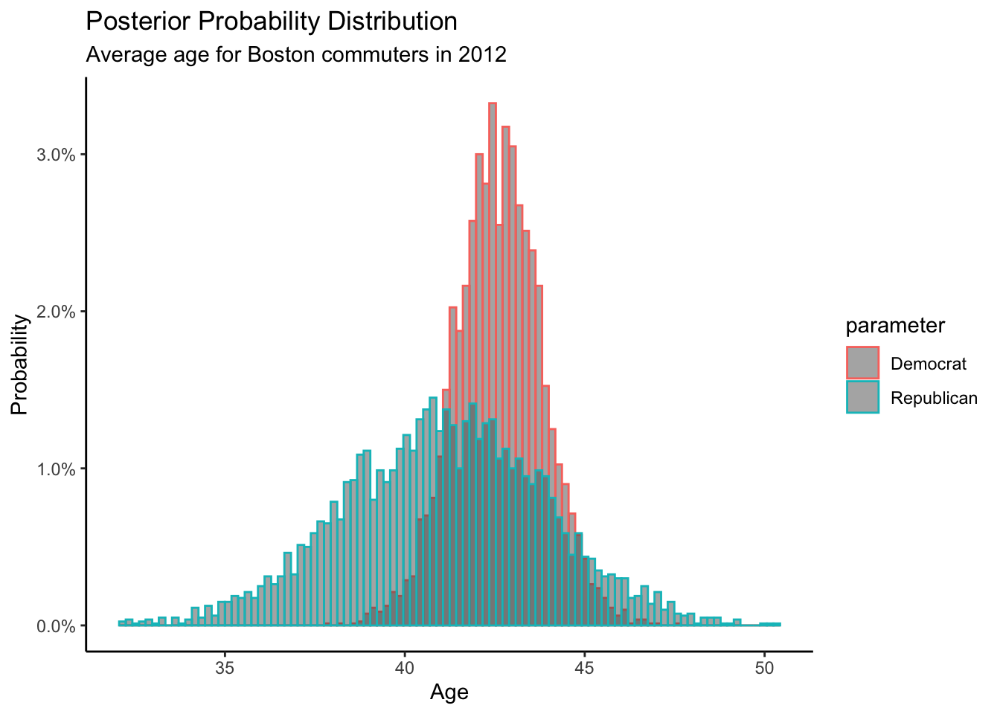
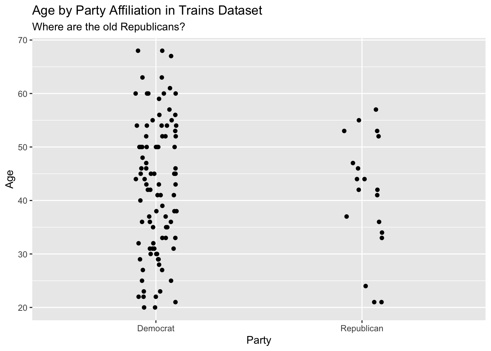
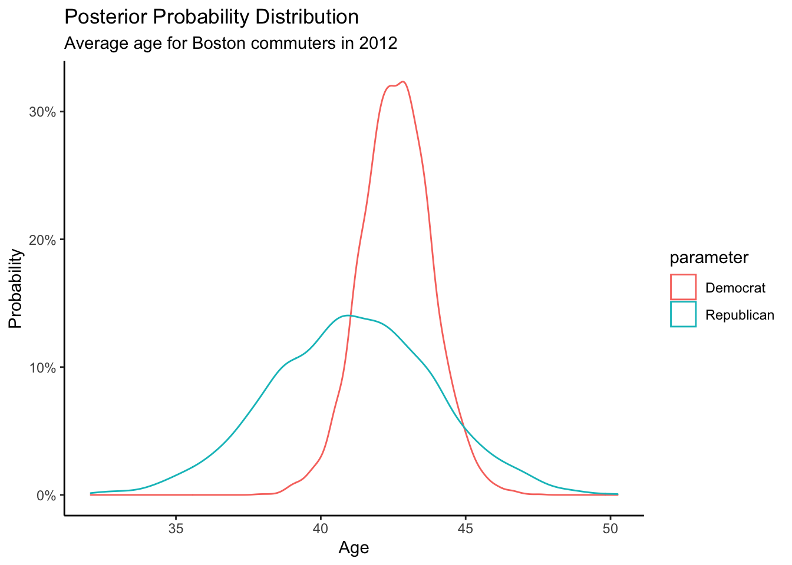
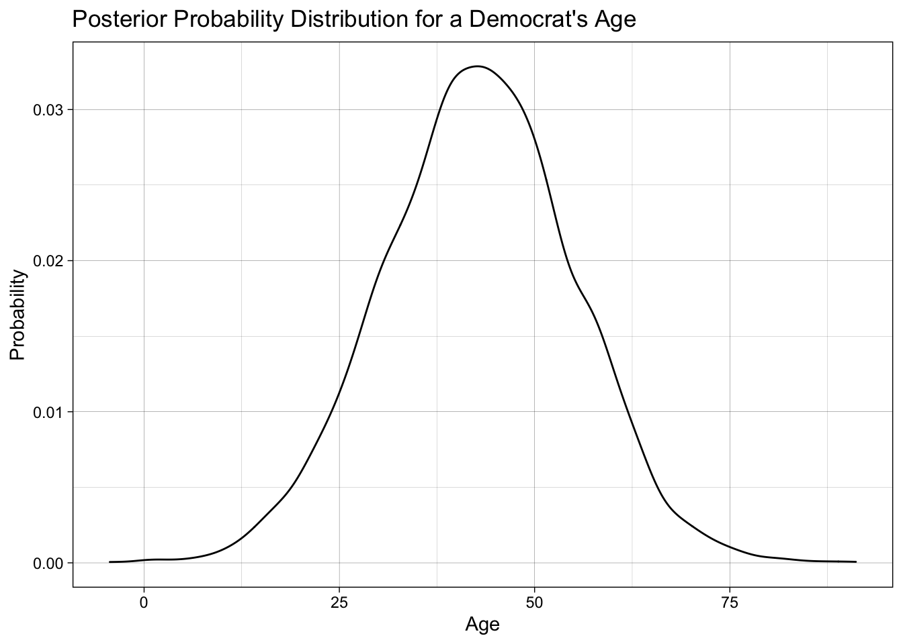
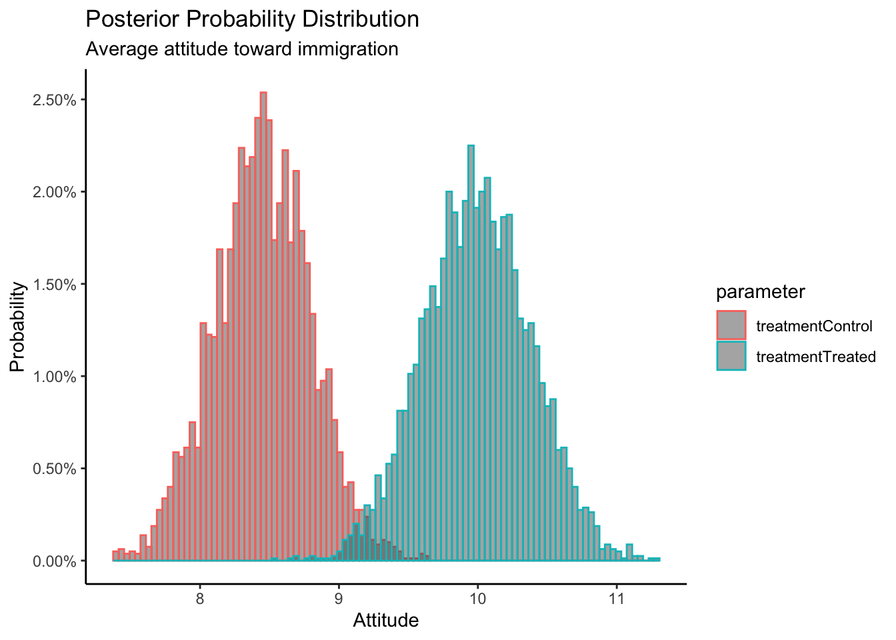
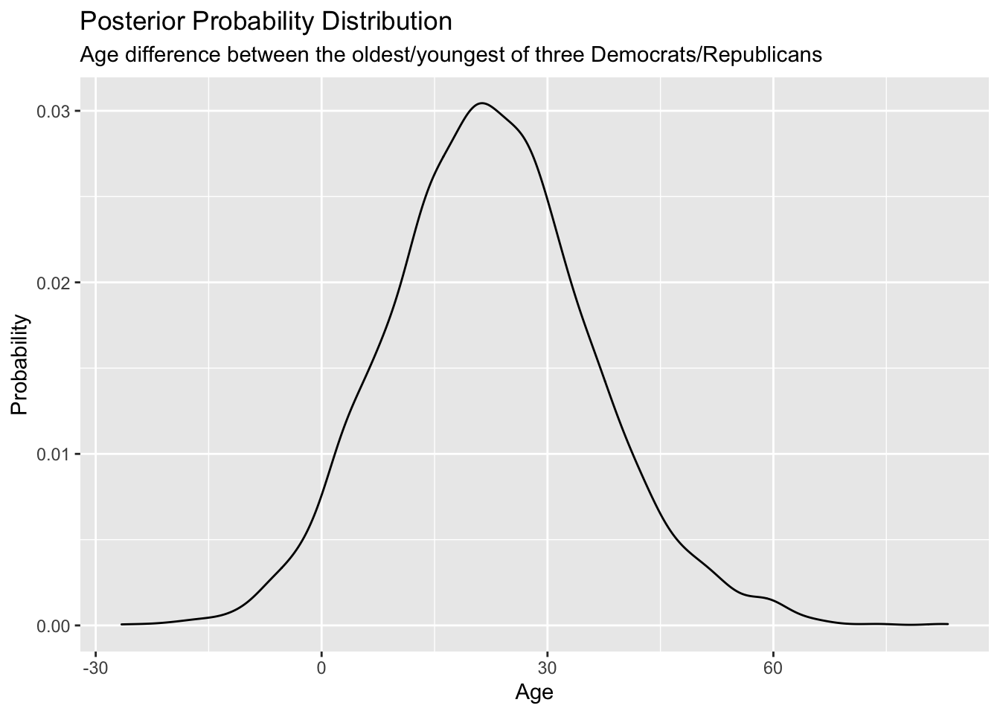
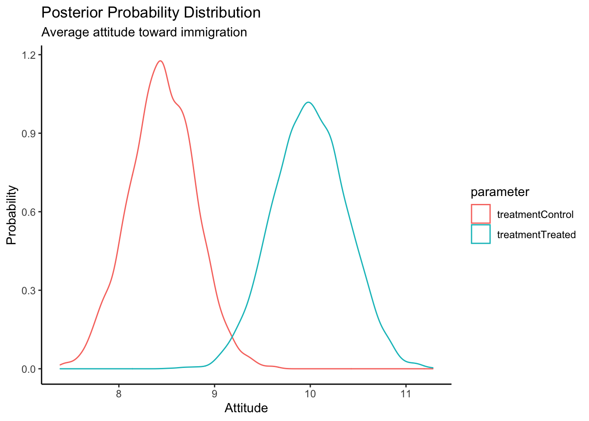
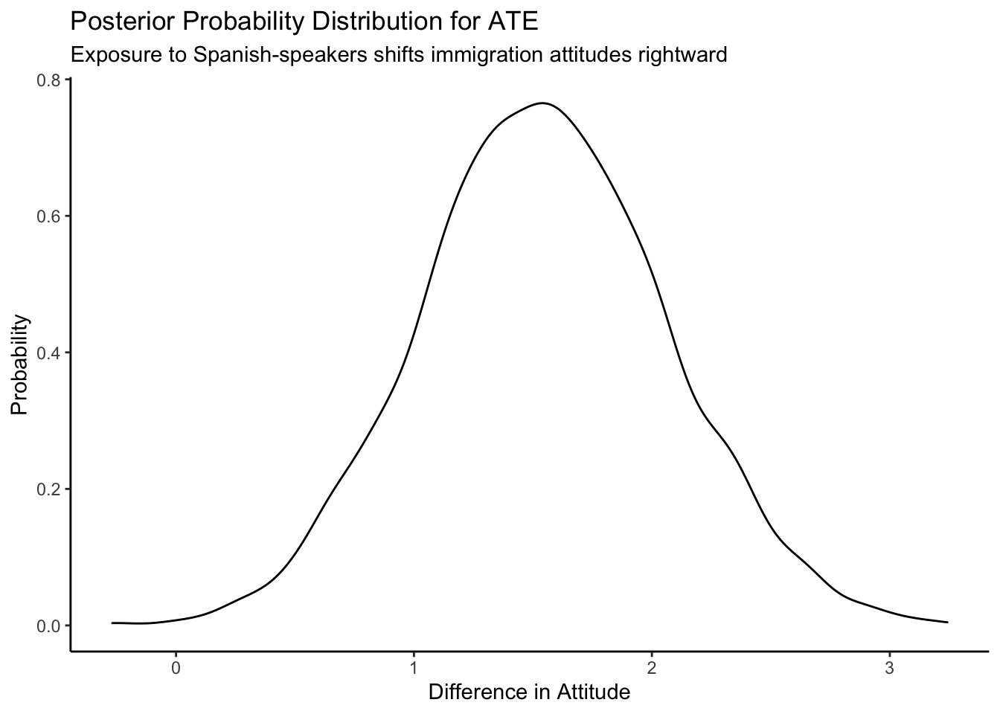

Chapter 8 Three Parameters
Models have parameters. In Chapter 6 we created models with a single parameter \(p\), the proportion of red beads in an urn. In Chapter 7 , we used models with two parameters: \(\mu\) (the average height in the population, generically known as a model “intercept”) and \(\sigma\) (the variation in height in the population). Here — can you guess where this is going? — we will build models with three parameters: \(\sigma\) (which serves the same role throughout the book) and two intercepts: \(\beta_1\) and \(\beta_2\). All this notation is confusing, not least because different academic fields use inconsistent schemes. The key is to just follow the cardinal virtues and tackle your problem step by step.
8.1 EDA for trains
Always explore your data. To demonstrate modeling with three parameters, we will use the trains data set from the PPBDS.data package. Recall the discussion from Chapter 3. Enos (2014) randomly placed Spanish-speaking confederates on nine train platforms around Boston, Massachusetts. Exposure to Spanish-speakers – the treatment – influenced attitudes toward immigration. These reactions were measured through changes in answers to three survey questions. Let’s load the libraries we will need in this chapter, all of which we have used before, and look at the data.
## Rows: 115
## Columns: 8
## $ gender <chr> "Female", "Female", "Male", "Male", "Male", "Female", "Fema…
## $ liberal <lgl> FALSE, FALSE, TRUE, FALSE, TRUE, FALSE, FALSE, FALSE, FALSE…
## $ party <chr> "Democrat", "Republican", "Democrat", "Democrat", "Democrat…
## $ age <dbl> 31, 34, 63, 45, 55, 37, 53, 36, 54, 42, 33, 50, 24, 40, 53,…
## $ income <dbl> 135000, 105000, 135000, 300000, 135000, 87500, 87500, 13500…
## $ att_start <dbl> 11, 9, 3, 11, 8, 13, 13, 10, 12, 9, 10, 11, 13, 6, 8, 13, 7…
## $ treatment <fct> Treated, Treated, Treated, Treated, Control, Treated, Contr…
## $ att_end <dbl> 11, 10, 5, 11, 5, 13, 13, 11, 12, 10, 9, 9, 13, 7, 8, 13, 8…Here, we can see information about each respondent’s gender, political affiliations, age, and income. Additionally, treatment indicates whether a subject was in the control or treatment group, and their attitudes toward immigration both before (att_start) and after (att_end) the experiment. You can type ?trains to read the help page for more information about each variable. Let’s restrict attention to a subset of the variables.
It is always smart to look at a some random samples of the data:
## # A tibble: 5 x 4
## age att_end party treatment
## <dbl> <dbl> <chr> <fct>
## 1 44 9 Democrat Control
## 2 67 9 Democrat Control
## 3 42 10 Democrat Treated
## 4 52 10 Republican Treated
## 5 46 12 Democrat Controlatt_end is a measure of person’s attitude toward immigration. A higher number means more conservative, i.e., a more exclusionary stance toward immigration into the United States.
## Rows: 115
## Columns: 4
## $ age <dbl> 31, 34, 63, 45, 55, 37, 53, 36, 54, 42, 33, 50, 24, 40, 53,…
## $ att_end <dbl> 11, 10, 5, 11, 5, 13, 13, 11, 12, 10, 9, 9, 13, 7, 8, 13, 8…
## $ party <chr> "Democrat", "Republican", "Democrat", "Democrat", "Democrat…
## $ treatment <fct> Treated, Treated, Treated, Treated, Control, Treated, Contr…Pay attention to the variable types. Do they make sense? Perhaps. But there are certainly grounds for suspicion. Why are age and att_end doubles rather than integers? All the values in the data appear to be integers, so there is no benefit to having these variables be doubles. Why is party a character variable and treatment a factor variable? It could be that these are intentional choices made by the creator of the tibble, i.e., us. These could be mistakes. Or, most likely, these choices are a mixture of sensible and arbitrary. Regardless, it is your responsibility to notice them. You can’t make a good model without looking closely at the data which you are using.
TABLE 8.1: Data summary
| Name | Piped data |
| Number of rows | 115 |
| Number of columns | 4 |
| _______________________ | |
| Column type frequency: | |
| character | 1 |
| factor | 1 |
| numeric | 2 |
| ________________________ | |
| Group variables | None |
Variable type: character
| skim_variable | n_missing | complete_rate | min | max | empty | n_unique | whitespace |
|---|---|---|---|---|---|---|---|
| party | 0 | 1 | 8 | 10 | 0 | 2 | 0 |
Variable type: factor
| skim_variable | n_missing | complete_rate | ordered | n_unique | top_counts |
|---|---|---|---|---|---|
| treatment | 0 | 1 | FALSE | 2 | Con: 64, Tre: 51 |
Variable type: numeric
| skim_variable | n_missing | complete_rate | mean | sd | p0 | p25 | p50 | p75 | p100 | hist |
|---|---|---|---|---|---|---|---|---|---|---|
| age | 0 | 1 | 42.4 | 12.2 | 20 | 33 | 43 | 52 | 68 | ▆▇▇▇▃ |
| att_end | 0 | 1 | 9.1 | 2.9 | 3 | 7 | 9 | 11 | 15 | ▂▃▇▃▃ |
skim() shows us what the different values of treatment are because it is a factor. Unfortunately, it does not do the same for character variables like party. The ranges for age and att_end seem reasonable. Recall that participants were asked three questions about immigration issues, each of which allowed for an answer indicated strength of agreement on a scale form 1 to 5, with higher values indicating more agreement with conservative viewpoints. att_end is the sum of the responses to the three questions, so the most liberal possible value is 3 and the most conservative is 15.
Always plot your data.
ch8 %>%
ggplot(aes(x = party, y = age)) +
geom_jitter(width = 0.1, height = 0) +
labs(title = "Age by Party Affiliation in Trains Dataset",
subtitle = "Where are the old Republicans?",
x = "Party",
y = "Age")
There are more Democrats in this dataset than Republicans. Democrats also span a wider range of ages than Republicans.
ch8 %>%
ggplot(aes(x = treatment, y = att_end)) +
geom_boxplot() +
labs(title = "Attitude End by Treatment in Trains Dataset",
subtitle = "Did the treatment make people more conservative?",
x = "Treatment",
y = "Attitude After Experiment")
On a boxplot, the top and bottom borders of the box denotes the 75th and 25th percentiles, respectively. The line inside the box denotes the median of the data. Treated individuals have a higher mean att_end than the control group, and a higher distribution in general.
In this chapter, we will make two models. The first explains age as a function of party. The second uses att_end as the dependent variable and treatment as the independent variable.
8.2 age ~ party
We want to build a model and then use that model to make claims about the world. What is the probability that, if a Democrat shows up at the train station, he will be over 50 years old? In a group of three Democrats and three Republicans, what age difference should we expect between the oldest Democrat and the youngest Republican? We can answer these and similar questions by creating a model that uses party affiliation to predict age
8.2.1 Wisdom
 FIGURE 8.1: Wisdom
FIGURE 8.1: Wisdom
In data science, there are two main aspects to Wisdom: representativeness and ethics. The data that we have are very limited. There are only 115 observations, all from 2012 and involving train commuters to Boston. How useful will this data be today, or for other populations around Boston, or for other cities in the US? Only your judgment, along with advice from your colleagues, can guide you.
The key concept is the idea of a “population.” From which larger population is the data we have being (conceptually) drawn? If we were only interested in the age of indidividuals in our data set, we would have no need for inference. We know everyone’s ages already. We only need tools like stan_glm() if we seek to understand individuals not in our data. So, at the very start of any data science, we need to decide something about the larger population which we are interested in. Only if our data is “representative,” at least to some extent, of that larger population can we use our data to answer our questions.
The ethical issues are, fortunately, not fraught. Estimating someone’s age is (universally?) viewed as OK. Estimating someone’s health or income or criminal record are far dicier.
8.2.2 Justice
 FIGURE 8.2: Justice
FIGURE 8.2: Justice
Justice, in data science, consists of three topics: predictive versus causal modeling, the Preceptor Table, and a mathematical formulation of the model.
Any model with age as its dependent variable will be predictive, not causal, for the simple reason that nothing, other than time, can change your age. You are X years old. It would not matter if you changed your party registration from Democrat to Republican or vice versa. Your age is your age.
In terms of the Preceptor Table, this fact means that there is only one potential outcome, i.e., one outcome. There is not a potential outcome if you are Democrat and a different potential outcome if you are a Republican.
When dealing with a non-causal model, the focus is on predicting things. The underlying mechanism which connects age with party is less important than the brute statistical fact that there is a connection. Predictive models care little about causality.
A good way at looking at this is with a Preceptor Table, as seen below. Unlike the previous table in Chapter 7, we now have two columns in addition to the ID one. To the left, we have the predictor used in the model, which is political party, and to the right we have what that variable will be predicting, which is age. Since our data does not include all Republicans and Democrats in the world, not every row is filled in.
| ID | Predictor | Outcome |
|---|---|---|
| Political Party | Age | |
| 1 | D | 31 |
| 2 | ? | ? |
| ... | ... | ... |
| 473 | D | 58 |
| 474 | ? | ? |
| ... | ... | ... |
| 3,258 | ? | ? |
| 3,259 | R | 49 |
| ... | ... | ... |
| N | ? | ? |
We now know that we are working with a predictive model. Recall:
\[outcome = model + not\ in\ the\ model\]
In words, any event depends on our explicitly described model as well as on influences unknown to us. Everything that happens in the world is the result of various factors, and we can only consider some of them in our model (because we do not know about some influences, or because we have no data about them).
So far we have only treated the equation above conceptually, but in fact it works just like any other equation. Let’s be a bit more concrete.
\[ y_i = \beta_1 x_{r,i} + \beta_2 x_{d,i} + \epsilon_i\]
where \[x_{r,i}, x_{d,i} \in \{0,1\}\] \[x_{r,i} + x_{d,i} = 1\] \[\epsilon_i \sim N(0, \sigma^2)\]
Don’t panic dear poets and philosophers, the whole thing is easier than it looks.
On the left-hand side we have the outcome, \(y_i\), which is the variable to be explained. In our case, this is the age.
On the right-hand side we first have the part contained in the model, consisting of two similar terms. Each term consists of a parameter and a data point. The betas are our two parameters: \(\beta_1\) is the average age of Republicans in the population and \(\beta_2\) is the average age of Democrats in the population. The \(x\)’s are our explanatory variables and take the values 1 or 0. If someone is a Republican we have \(x_{r,i} = 1\) and \(x_{d,i} = 0\), if someone is a Democrat we have \(x_{r,i} = 0\) and \(x_{d,i} = 1\). In other words, the \(x\)’s are binary variables and are mutually exclusive (if you are a Democrat, you cannot also be a Republican).
The last part, \(\epsilon_i\) (“epsilon”), represents the unexplained part and is called the error term. It is simply the difference between the outcome and our model predictions. This includes all factors that have an influence on someone’s age but are not connected to party affiliation. We assume that this error follows a normal distribution with an expected value of 0 (meaning it is 0 on average).
The small \(i\)’s are an index to number observations. It is equivalent to the “ID” column in our Preceptor Table and simply states that the outcome for person \(i\) is explained by the modeled and non-modeled factors for person \(i\). The corresponding \(x\)’s have an \(r\) or \(d\) subscript, for Republican or Democrat.
Keep in mind that the model is a claim about how the world works, not just for the 115 individuals for which we have data but for the all the people in the population for which we seek to draw inferences.
Although terminology differs across academic fields, the most common term to describe a model like this is a “regression.” We are “regressing”
ageonpartyin order to see if they are associated with each other. The formula above is a “regression formula”, and the model is a “regression model.” This terminology would also apply to our model ofheightin Chapter 7.
8.2.3 Courage
 FIGURE 8.3: Courage
FIGURE 8.3: Courage
Courage allows us to translate math to code.
To get posterior distributions for our three parameters, we will again use stan_glm(), just as we did in Chapter 7. If we take a look at the formula, we can see that it is similar to the equation from before.
The variable before the tilde,
age, is our outcome.The only explanatory variable is
party. This variable has only two values, ‘Democrat’ and ‘Republican’.We have also added
-1at the end of the equation, indicating that we do not want an intercept, which would otherwise be added by default.
The resulting output:
## stan_glm
## family: gaussian [identity]
## formula: age ~ party - 1
## observations: 115
## predictors: 2
## ------
## Median MAD_SD
## partyDemocrat 42.6 1.2
## partyRepublican 41.1 2.8
##
## Auxiliary parameter(s):
## Median MAD_SD
## sigma 12.3 0.8
##
## ------
## * For help interpreting the printed output see ?print.stanreg
## * For info on the priors used see ?prior_summary.stanregpartyDemocrat corresponds to \(\beta_1\), the average age of Democrats in the population. partyRepublican corresponds to \(\beta_2\), the average age of Republicans in the population. Since we don’t really care about the posterior distribution for \(\sigma\), we won’t discuss it here. Graphically:
fit_obj %>%
as_tibble() %>%
select(-sigma) %>%
mutate(Democrat = partyDemocrat, Republican = partyRepublican) %>%
pivot_longer(cols = Democrat:Republican,
names_to = "parameter",
values_to = "age") %>%
ggplot(aes(x = age, color = parameter)) +
geom_histogram(aes(y = after_stat(count/sum(count))),
alpha = 0.5,
bins = 100,
position = "identity") +
labs(title = "Posterior Probability Distribution",
subtitle = "Average age for Boston commuters in 2012",
x = "Age",
y = "Probability") +
scale_y_continuous(labels = scales::percent_format()) +
theme_classic()
The unknown parameters \(\beta_1\) (partyDemocrat) and \(\beta_2\) (partyRepublican) are still unknown. We can never know the true average age of all Democrats in the population. But we can calculate a posterior probability distribution for the parameters. Comments:
Democrats seem slightly older than Republicans. That was true in our sample and so, almost (but not quite!) by definition, it will be true in our the posterior probability distributions.
Our estimate for the average age of Democrats in the population is much more precise than that for Republicans because we have five times as many Democrats as Republicans in our sample. A central lesson from Chapter 6 is that, the more data you have related to a parameter, the narrower your posterior distribution will be.
There is a great deal of overlap between the two distributions. Would we be surprised if, in truth, the average age of Republicans in the population was greater than that for Democrats? Not really. We don’t have enough data to be sure either way.
The phrase “in the population” is doing a great deal of work because we have not said what, precisely, we mean by the “population.” Is it the set of people on those commuter platforms on those days in 2012 when the experiment was done? Is it the set of people on all platforms, including ones never visited? Is it the set of all Boston commuter? All Massachusetts residents? All US residents? Does it include people today, or can we only draw inferences for 2012? We will explore these questions in every model we create.
Look at the following table that shows a sample of 8 individuals.
| 8 Observations from Trains Dataset | |||
|---|---|---|---|
| Age | Party | Fitted | Residual |
| 31 | Democrat | 42.61 | -11.6 |
| 34 | Republican | 41.13 | -7.1 |
| 63 | Democrat | 42.61 | 20.4 |
| 45 | Democrat | 42.61 | 2.4 |
| 55 | Democrat | 42.61 | 12.4 |
| 37 | Democrat | 42.61 | -5.6 |
| 53 | Republican | 41.13 | 11.9 |
| 36 | Democrat | 42.61 | -6.6 |
The fitted values are the same for all Republicans and for all Democrats, as the model produces one fitted value for each condition. This table shows how just a sample of 8 individuals captures a wide range of residuals, making it difficult to predict the age of a new individual. We can get a better picture of the unmodeled variation in our sample if we plot these three variables for all the individuals in our data.
The following three histograms show the actual outcomes, fitted values, and residuals of all people in trains:

The three plots are structured like our equation and table above. A value in the left plot is the sum of one value from the middle plot plus one from the right plot.
The actual age distribution looks like a normal distribution. It is centered around 43, and it has a standard deviation of about 12 years.
The middle plot for the fitted values shows only two adjacent spikes, which represent the estimates for Democrats and Republicans.
Since the residuals plot represents the difference between the other two plots, its distribution looks like the first plot.
8.2.4 Temperance
 FIGURE 8.4: Temperance
FIGURE 8.4: Temperance
Recall the first questions with which we began this section:
- What is the probability that, if a Democrat shows up at the train station, he will be over 50 years old?
So far we have only tried our model on people from our data set whose real age we already knew. This is helpful to understand the model, but our ultimate goal is to understand more about the real world, about people we don’t yet know much about. Temperance guides us to make meaningful predictions and to become aware of their known and unknown limitations.
Start with a simple question, what are the chances that a random Democrat is over 50 years old? First, we create a tibble with the desired input for our model. In our case the tibble has a variable named “party” which contains a single observation with the value “Democrat”. This is a bit different than Chapter 7.
Next, we’ll use the posterior_predict() function to get some draws from the posterior for this scenario. Note that we have a new posterior distribution under consideration here. The unknown parameter, call it \(D_{age}\), is the age of a Democrat. This could be the age of a randomly selected Democrat from the population or of the next Democrat we meet or of the next Democrat we interview on the train platform. The definition of “population” determines the appropriate interpretation. Yet, regardless, \(D_{age}\) is an unknown parameter. But it is not one — like \(\beta_1\), \(\beta_2\), or \(\sigma\) — for which we have already created a posterior probability distribution. That is why we need posterior_predict().
posterior_predict() takes two arguments: the model for which the simulations should be run, and a tibble indicating for which and how many parameters we want to run these simulations. In this case, the model is the one from Courage and the tibble is the one we just created.
set.seed(9)
pp <- posterior_predict(fit_obj, newdata = new_obs) %>%
as_tibble() %>%
mutate_all(as.numeric)
head(pp, 10)## # A tibble: 10 x 1
## `1`
## <dbl>
## 1 34.6
## 2 34.0
## 3 41.7
## 4 41.4
## 5 48.2
## 6 26.6
## 7 57.2
## 8 41.0
## 9 38.2
## 10 39.5We might expect that we can use as_tibble() directly after the object returned posterior_predict(). Sadly, for obscure technical reasons, that won’t quite work. So, we need the incantation mutate_all(as.numeric) to make sure that the resulting tibble is well-behaved. This command ensures that every column in the tibble is a simple numeric vector, which is what we want.
A look at the first few observations shows that we simply get ten draws from the model’s posterior distribution of the age of a Democrat. It is important to understand that this is not a concrete person from the trains dataset - the algorithm in posterior_predict() simply uses the existing data from trains to estimate this posterior distribution.
pp %>%
ggplot(aes(x = `1`)) +
geom_histogram(aes(y = after_stat(count/sum(count))),
bins = 100) +
labs(title = "Posterior Probability Distribution for a Democrat's Age",
x = "Age",
y = "Probability") +
scale_y_continuous(labels = scales::percent_format()) +
theme_classic()
Once we have the posterior distribution, we can answer (almost) any reasonable question. In this case, the probability that the next Democrat will be over 50 is around 27%.
tibble(age = pp$`1`) %>%
mutate(ot_50 = ifelse(age > 50, TRUE, FALSE)) %>%
summarize(perc = sum(ot_50)/n())## # A tibble: 1 x 1
## perc
## <dbl>
## 1 0.276Recall the second question:
- In a group of three Democrats and three Republicans, what age difference should we expect between the oldest Democrat and the youngest Republican?
As before we start by creating a tibble with the desired input. Note that the name of the column (“party”) and the observations (“Democrat”, “Republican”) must always be exactly as they are in the original data set. This tibble as well as our model can then be used as arguments for posterior_predict():
new <- tibble(party = c("Democrat", "Democrat", "Democrat",
"Republican", "Republican","Republican"))
set.seed(27)
pp <- posterior_predict(fit_obj, newdata = new) %>%
as_tibble() %>%
mutate_all(as.numeric)
head(pp, 10)## # A tibble: 10 x 6
## `1` `2` `3` `4` `5` `6`
## <dbl> <dbl> <dbl> <dbl> <dbl> <dbl>
## 1 67.6 58.2 34.6 19.5 24.0 41.1
## 2 44.6 59.4 72.1 40.5 20.8 37.8
## 3 63.6 45.5 34.0 21.6 14.5 21.6
## 4 44.7 49.1 37.7 30.8 46.6 44.6
## 5 3.79 26.7 29.7 36.6 49.0 36.5
## 6 39.9 29.5 65.8 21.5 36.7 54.2
## 7 51.1 51.2 41.2 49.7 16.9 37.3
## 8 59.1 70.1 22.4 29.2 20.7 48.3
## 9 45.8 36.2 35.3 43.5 51.3 25.1
## 10 63.0 53.5 47.5 55.2 47.4 54.3A look at the output shows that we now have 6 columns: one for each person. R does not name the columns, but they are arranged in the same order in which we specified the persons in the tibble (D, D, D, R, R, R). To determine the expected age difference, we can then proceed as follows:
pp %>%
set_names(c("dem_1", "dem_2", "dem_3",
"rep_1", "rep_2", "rep_3")) %>%
rowwise() %>%
# Creating three new columns. The first two are the
# highest age among Democrats and the lowest age
# among Republicans, respectively. The third one is
# the difference between the first two.
mutate(dems_oldest = max(c_across(dem_1:dem_3)),
reps_youngest = min(c_across(rep_1:rep_3)),
age_diff = dems_oldest - reps_youngest) %>%
# Ungroup to tell R not to perform rowwise operations
# anymore.
ungroup() %>%
# Create posterior probability distribution
ggplot(aes(x = age_diff)) +
geom_histogram(aes(y = after_stat(count/sum(count))),
bins = 100) +
labs(title = "Posterior Probability Distribution",
subtitle = "Age difference between the oldest/youngest of three Democrats/Republicans",
x = "Age",
y = "Probability") +
scale_y_continuous(labels = scales::percent_format()) +
theme_classic()
In words, we would expect the oldest Democrat to be about 22 years older than the youngest Republican, but we would not be surprised if the oldest Democrat was actually younger than the youngest Republican in a group of 6.
8.3 att_end ~ treatment
Above, we created a predictive model: with someone’s party affiliation, we can make a better guess as to what their age is then what we could have in the absence of information about their party. There was nothing causal about that model. Changing someone’s party registration can not change their age. In this example, we build a causal model. What is the average treatment effect, of exposing people to Spanish-speakers, on their attitudes toward immigration? What is the largest causal effect which still has a 1 in 10 chance of occurring?
8.3.1 Wisdom
FIGURE 8.5: Wisdom
We are still using the data from Enos (2014). Yet the world is a very different place today! Is data from 2012, four years before Donald Trump’s election as president, still relevant? Can we generalize data from Boston commuters to other people in Massachusetts, to other people in the US? There are no obvious answers to these questions. The data we have is never a perfect match to the problem we face because data is always old. The world is constantly changing. To use old data, we need to make assumptions about the stability of our model of the world and of the parameters we are estimating. Whether those assumptions are reasonable is a difficult question, one that requires knowledge about the world as it was and the world as it now is. Math won’t save us.
The critical issue is always: Which population are we interested in and does our data come from that population? If there is no connection between the two, progress is impossible. But, in this case, if we are willing to consider the population of US residents over the last decade (including today), and if we are willing to assume that our data set of 115 individuals is representative of that population, then we can use our data to create a model to answer our question.
Ethical issues are tricky, or at least trickier than they were in the context of models in which the dependent variable was height or age. (And the ethical issues in conducting the experiment in the first place are non-trivial.) Assume we make a good model. What is to prevent someone from using that information to, say, influence voting and donations? Imagine a Republican Senate candidate who hires Spanish-speakers to ride commuter trains in order to shift voters’ attitudes toward immigration in a conservative direction. She believes (correctly?) that doing so will increase her odds of winning the election. Is that the sort of knowledge we seek to create? We can make such models. Indeed, the purpose of this chapter is to show you how to do so! But should you make those models?
8.3.2 Justice
FIGURE 8.6: Justice
The three elements of Justice in data science remain the same: predictive/causal models, Preceptor Table, and mathematical formula.
A Preceptor Table for this model would look very similar to the one in the first half of this chapter, except that we have now possible outcomes for each individual: att_end if they are exposed to treatment and att_end they are exposed to control.
The math for this model is exactly the same as the math for the predictive model in the first half of the chapter, although we change the notation a bit for clarity.
\[ y_i = \beta_1 x_{t,i} + \beta_2 x_{c,i} + \epsilon_i\]
where \[x_{t,i}, x_{c,i} \in \{0,1\}\] \[x_{t,i} + x_{c,i} = 1\] \[\epsilon_i \sim N(0, \sigma^2)\]
Nothing has changed, except for the meaning of the data items and the interpretations of the parameters.
On the left-hand side we have the outcome, \(y_i\), which is the variable to be explained. In our case, this is a person’s attitude toward immigration after the experiment is complete. \(y_i\) takes on integer values between 3 and 15 inclusive.
On the right-hand side we first have the part contained in the model, consisting of two similar terms. The two terms stand for Treated and Control and work as follows. Each term consists of a parameter and a data point. \(\beta_1\) is the average attitude toward immigration for treated individuals — those exposed to Spanish-speakers — in the population. \(\beta_2\) is the average attitude toward immigration for control individuals — those not exposed to Spanish-speakers — in the population. The \(x\)’s are our explanatory variables and take the values 1 or 0. If someone is a Treated we have \(x_{t,i} = 1\) and \(x_{c,i} = 0\), if someone is a Control we have \(x_{t,i} = 0\) and \(x_{c,i} = 1\). In other words, the \(x\)’s are binary variables and are mutually exclusive – if you are a Treated, you cannot also be a Control.
Note that the formula applies to everyone in the population, not just the 115 people for whom we have data. The index \(i\) does not just go from 1 through 115. It goes from 1 through \(N\), where \(N\) is the number of individuals in the population. Conceptually, everyone has an
att_endunder treatment and under control.
The last part, \(\epsilon_i\) (“epsilon”), represents the unexplained part and is called the error term. It is simply the difference between the outcome and our model predictions. In our particular case, this includes all factors that have an influence on someone’s attitude toward immigration but are not explained by treatment status. We assume that this error follows a normal distribution with an expected value of 0.
The small \(i\)’s are an index to number observations in our data set. It is equivalent to the “ID” column in our Preceptor Table and simply states that the outcome for person \(i\) is explained by the modeled and non-modelled factors for person i. The corresponding \(x\)’s have a \(t\) or \(c\) subscript, for Treated or Control.
8.3.3 Courage
FIGURE 8.7: Courage
With Justice satisfied, we gather our Courage and fit the model. Note that, except for the change in variable names, the code is exactly the same as it was above, in our predictive model for age. Predictive models and causal models use the same math and the same code. The differences, and they are very important, lie in the interpretation of the results, not in their creation.
## stan_glm
## family: gaussian [identity]
## formula: att_end ~ treatment - 1
## observations: 115
## predictors: 2
## ------
## Median MAD_SD
## treatmentTreated 10.0 0.4
## treatmentControl 8.5 0.3
##
## Auxiliary parameter(s):
## Median MAD_SD
## sigma 2.8 0.2
##
## ------
## * For help interpreting the printed output see ?print.stanreg
## * For info on the priors used see ?prior_summary.stanregtreatmentTreated corresponds to \(\beta_1\). As always, R has, behind the scenes, estimated the entire posterior probability distribution for \(\beta_1\). We will graph that distribution in the next section. But the basic print method for these objects can’t show the entire distribution, so it gives us summary numbers: the median and the MAD SD. Speaking roughly, we would expect about 95% of the values in the posterior to be within two MAD SD’s of the median. In other words, we are 95% confident that the true, but unknowable, average attitude toward immigration among the Treated in the population to be between 9.2 and 10.8.
treatmentControl corresponds to \(\beta_2\). The same analysis applies. We are about 95% confident that the true value for the average attitude toward immigration for Control in the population is between 7.9 and 9.1.
Up until now, we have used the Bayesian interpretation of “confidence interval.” This is also the intuitive meaning which, outside of academia, is almost universal. There is a truth out there. We don’t know, and sometimes can’t know, the truth. A confidence interval, and its associated confidence level, tells us how likely the truth is to lie within a specific range. If your boss asks you for a confidence interval, she almost certainly is using this interpretation.
But, in contemporary academic research, the phrase “confidence interval” is usually given a “Frequentist” interpretation. (The biggest divide in statistics is between Bayesians and Frequentist interpretations. The Frequentist approach, also known as “Classical” statistics, has been dominant for 100 years. Its power is fading, which is why this textbook uses the Bayesian approach.) For a Frequentist, a 95% confidence interval means that, if we were to apply the procedure we used in an infinite number of future situations like this, we would expect the true value to fall within the calculated confidence intervals 95% of the time. In academia, a distinction is sometimes made between confidence intervals (which use the Frequentist interpretation) and credible intervals (which use the Bayesian interpretation). We won’t worry about that difference in this book.
Let’s look at the entire posteriors for both \(\beta_1\) and \(\beta_2\).
fit_obj %>%
as_tibble() %>%
select(-sigma) %>%
pivot_longer(cols = treatmentTreated:treatmentControl,
names_to = "parameter",
values_to = "attitude") %>%
ggplot(aes(x = attitude, color = parameter)) +
geom_histogram(aes(y = after_stat(count/sum(count))),
alpha = 0.5,
bins = 100,
position = "identity") +
labs(title = "Posterior Probability Distribution",
subtitle = "Average attitude toward immigration",
x = "Attitude",
y = "Probability") +
scale_y_continuous(labels = scales::percent_format()) +
theme_classic()
It appears that the affect of the treatment is to change people’s attitudes to be more conservative about immigration issues. Which is somewhat surprising!
We can decompose the the dependent variable, att_end into two parts: the fitted values and the residuals. There are only two possible fitted values, one for the Treated and one for the Control. The residuals, as always, are simply the difference between the outcomes and the fitted values.

The smaller the spread of the residuals, the better a job the model is doing of explaining the outcomes.
8.3.4 Temperance
FIGURE 8.8: Temperance
Recall the first question with which we began this section:
- What is the average treatment effect, of exposing people to Spanish-speakers, on their attitudes toward immigration?
Recall from Chapter 3 the discussion of the average treatment effect. One simple estimator of the average treatment effect is the difference between \(\beta_1\) and \(\beta_2\). After all, the definition of \(\beta_1\) is the average attitude toward immigration, of the population, for anyone, under exposure to the treatment. So, \(\beta_1 - \beta_2\) is the average treatment effect for the population, roughly 1.5. However, estimating the posterior probability distribution for this parameter is tricky, unless we make use of the posterior distributions of \(\beta_1\) and \(\beta_2\). With that information, the problem is simple:
set.seed(14)
fit_obj %>%
as_tibble() %>%
mutate(ate = treatmentTreated - treatmentControl) %>%
ggplot(aes(x = ate)) +
geom_histogram(aes(y = after_stat(count/sum(count))),
bins = 100) +
labs(title = "Posterior Probability Distribution for ATE",
subtitle = "Exposure to Spanish-speakers shifts immigration attitudes rightward",
x = "Difference in Attitude",
y = "Probability") +
scale_y_continuous(labels = scales::percent_format()) +
theme_classic()
Could the true value of the average treatment effect be as much as 2 or as little as 1? Of course! The most likely value is around 1.5, but the variation in the data and the smallness of our sample cause the estimate to be imprecise. However, it is quite unlikely that the true average treatment effect is below zero.
Our second question:
- What is the largest effect size which still has a 1 in 10 chance of occurring?
To answer this question, we first need to create a tibble which we can pass to posterior_predict(). The variables in the tibbles which will be passed in as newdata must be exactly the same as their counterparts in the original data. For example, treatment must be a factor, with the same levels as it has in trains.
Consider the result of posterior_predict() for someone treated and someone in the control group.
pp <- posterior_predict(fit_obj,
newdata = ate_data) %>%
as_tibble() %>%
mutate_all(as.numeric)
te <- tibble(Treated = pp$`1`, Control = pp$`2`) %>%
mutate(te = Treated - Control)
te %>%
ggplot(aes(x = te)) +
geom_histogram(aes(y = after_stat(count/sum(count))),
bins = 100) +
labs(title = "Posterior Probability Distribution for Treatment Effect",
subtitle = "Causal effects are more variable for indivduals",
x = "Difference in Attitude",
y = "Probability") +
scale_y_continuous(labels = scales::percent_format()) +
theme_classic()
In this case, we are looking at the distribution of the treatment effect for a single individual. This is very different than the average treatment effect. In particular, it is much more variable. We are looking at one row in the Preceptor Table. For a single individual, att_end can be anywhere from 3 to 15, both under treatment and under control. The causal effect — the difference between the two potential outcomes can, in theory, be anywhere from -12 to +12. Such extreme values are rare, but not impossible.
The question, however, was interested in the value at the 90th percentile. For this model, that is 6.78. We would not expect a treatment effect of this magnitude to be common, but, at the same time, effects this big and bigger will occur about 10% of the time.
8.4 Conclusion
In this chapter, we explored relationships between different variables in the trains data set. We built a predictive model and a causal model using the following three parameters: \(\beta_1\), \(\beta_2\), and \(\sigma\).
Similar to previous chapters, our first task is to use Wisdom . We judge how relevant our data is to the questions we ask, using ethics to guide our decision. Could income data from 2012 really be suitable for making predictions today? Probably? Justice is necessary to decide the best way to represent the models we make. We use Courage to translate our models into code. Our goal is to understand, generate posterior distributions, and interpret their meaning. Temperance leads us to the final stage. We remind ourselves that there are so many unknown factors that affect our data. Our models are never as good as we hope them to be. We always use caution in applying our models to the real world.
Page built: 2020-11-10